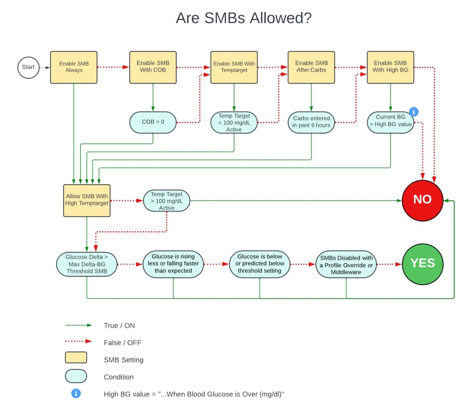

SMB Settings
Highlights
- UAMs should be enabled when SMBs are enabled.
- If entering carbs and/or bolusing: Max UAM Basal Minutes should be set lower than Max SMB Basal Minutes.
- If NOT entering carbs and/or bolusing (FCL): Max UAM Basal Minutes should be set higher than Max SMB Basal Minutes.
- Super micro boluses (SMB) often include your basal insulin. Your basal rate will be temporarily reduced after an SMB is delivered to prevent overdosing insulin.
- SMBs reduce blood sugar more quickly than temporary basal rates.
- If you want to configure SMBs only to run in certain conditions, do not turn on 'Enable SMB Always'.
- For a detailed look at when SMBs are used, see the chart in Are SMBs Allowed? section.
- For help with setup, see the New User Guide.
Warning
All of the SMB options listed below are inclusive, not exclusive. This means that if more than one option is enabled, only one of those options needs to apply in order for SMBs to be utilized.
Enable SMB Always
Default: OFF
When this setting is enabled, Super Micro Boluses (SMBs) will always be allowed if dosing calculations determine insulin is needed via the SMB delivery method. The exception is when a high temp target is set. Enabling SMB Always will remove the other redundant "Enable SMBs if..." options.
SMBs will remain on if you have a low temporary target set but will be fully disabled if a high temporary target is set (unless "Allow SMB With High Temptarget" is enabled).
The size of SMBs is limited by Max SMB Basal Minutes.
Enable SMB with COB
Default: OFF
When the carbs on board (COB) forecast line is active, enabling this feature allows Trio to use SMBs to deliver the insulin required.
Tip
Allowing SMBs when you have carbs on board can help with mealtime spikes in glucose.
Enable SMB with TempTarget
Default: OFF
Enabling this feature allows Trio to deliver insulin required using SMBs at times in which a manual temporary target (temp target) under 100 mg/dL (5.5 mmol/L) is set.
Tip
Low temp targets are often set when struggling with high glucose readings. Allowing SMBs at this time can help counter elevated glucose levels faster.
Enable SMB After Carbs
Default: OFF
Enabling this feature allows Trio to deliver insulin required using SMBs for 6 hours after any carb entry, regardless of whether there are active carbs on board (COB).
Tip
Carbs do not digest at the same rate. Allowing SMBs for the 6 hours after entering a meal will help Trio counter those carbs faster.
Enable SMB with High Glucose
Default: OFF
Enabling this feature allows Trio to deliver insulin required using SMBs when your glucose reading is above the value set as your 'High Glucose Target'. This additional setting will appear when you enable this feature.
High Glucose Target
Default: 110 mg/dL | 6.1 mmol/L
If 'Enable SMB with High BG' is enabled, SMBs will be allowed if your glucose is above this value.
Important
- This setting was often misunderstood. It was never a restriction on SMBs. To help clarify it's purpose for users, it has moved under the only setting it applies to,
Enable SMB with High BG.
- Its only function is to allow SMBs if glucose is above this number and
Enable SMB with High BG is turned ON.
- It will not prevent SMBs or UAMs below this number if other SMB settings are turned ON.
Allow SMB with High TempTarget
Default: OFF
Enabling this feature allows Trio to deliver insulin required using SMBs when a manual Temp Target above 100 mg/dL (5.5 mmol/L) is set.
Important
High Temp Targets are often used to recover from lows. If you use a high temp target for that purpose, this feature should remain disabled.
Enable UAM
Default: OFF
Important
This setting should be ON if other SMBs are enabled.
Enabling Unannounced Meal SMBs (UAMs) allows Trio to detect and respond to unexpected rises in glucose readings caused by unannounced or miscalculated meals, meals high in fat or protein, or other factors like adrenaline or cortisol.
It uses SMBs to deliver insulin in small amounts to correct glucose spikes. UAM also works in reverse, reducing or stopping insulin if glucose levels drop unexpectedly.
The size of UAMs is limited by Max UAM Basal Minutes
Tip
Enabling UAM will give minor adjustments in your insulin dosing to account for the difference in expected glucose and actual glucose readings.
- If you are entering carbs and/or bolusing for meals,
Max UAM Basal Minutes should be set lower than Max SMB Basal Minutes.
- If you are not entering carbs or bolusing for meals,
Max UAM Basal Minutes should be set higher than Max SMB Basal Minutes.
Max SMB Basal Minutes
Default: 30 minutes
Setting Limits: 15-180 minutes (5-minute steps)
If any of the SMB options are enabled, this limit will apply to all SMBs except UAM SMBs. This is a limit on the size of a single SMB. One SMB can only be as large as this many minutes of your current profile basal rate.
To calculate the maximum SMB allowed based on this setting, use the following formula:
Bill's current basal rate is 2.0 units/hr. His Max SMB Basal Minutes is set to 30 minutes. What is the largest SMB he can receive?
Here is the formula you will need:
Calculate Bill's largest SMB:
Answer
The basal-minute cap in this example is 1.0 unit per eligible SMB before other constraints. This does not guarantee delivery every five minutes.
Warning
Increasing this value above 90 minutes may impact Trio's ability to effectively zero temp and prevent lows.
Tip
If you are entering carbs or bolusing for meals, your Max SMB Basal Minutes should be set higher than your Max UAM Basal Minutes
Max UAM Basal Minutes
Default: 30 minutes
Setting Limits: 15-180 minutes (5-minute steps)
If UAM is enabled, this setting limits the size of each UAM SMB. One UAM SMB can only be as large as this many minutes of your current profile basal rate.
To calculate the maximum UAM allowed based on this setting, use the following formula:
Warning
Increasing this value above 90 minutes may impact Trio's ability to effectively zero temp and prevent lows.
Tip
If you are NOT entering carbs or bolusing for meals and using Trio as a Fully Closed Loop (FCL), your Max UAM Basal Minutes should be set higher than your Max SMB Basal Minutes
Max Allowed Glucose Rise for SMB
Default: 20%
Setting Limits: 10%–40%
The 1.0.2 Swift dosing engine disables SMBs when glucoseStatus.maxDelta > min(configured fraction, 0.4) × current glucose. Equality does not trigger this particular block. This is a comparison with current glucose and the computed maximum delta, not simply a percentage change divided by the previous glucose reading.
For example, if the computed maximum delta is 25 mg/dL and current glucose is 115 mg/dL, the default threshold is 0.2 × 115 = 23 mg/dL. Because 25 exceeds 23, this check blocks SMB delivery on that determination. Passing this check alone does not promise a dose or a compensating high temporary basal; the rest of the determination still applies.
Are SMBs Allowed?

By following the flow chart above, you can see which combination of settings will allow SMBs.
- If a setting in the top row is toggled off, look at the next box to the right. If no box in the top row is toggled on, then SMBs will not be allowed.
- If any of the settings in the top row are toggled on and their condition is true, follow the green line down to the "Allow SMB with High Temptarget" box.
- If "Allow SMB with High Temptarget" is toggled on (NOT the default), then continue to follow the green line to the bottom conditions.
- If "Allow SMB with High Temptarget" is toggled off (which IS the default), it will then check if you've set a Temp Target (not a custom profile) above 100 mg/dL (5.5 mmol/L). If you have a Temp Target set above 100 mg/dL, then SMBs are DISABLED and not allowed.
If you've made it to the bottom row, it checks all those conditions, and if none of them are true, then SMBs are allowed.
Here is the order of settings Trio uses when deciding whether to enable or disable SMBs:
- Disable when a High Temptarget is set (unless "Allow SMB with High Temp Target" is enabled)
- Enable if "Enable SMB Always" is set (unless disabled for "High Temp Target")
- Enable while there are COB
- Enable for a full 6 hours after any carb entry
- Enable if a Low Temp Target is set
Permission, UAM and dose-cap selection in 1.0.2
Enabling UAM is not itself an SMB-enabling condition. The permission function first considers override/scheduled SMB blocks and high Temp Target restrictions, then the enabled SMB conditions (Always, COB, After Carbs, low Temp Target, and High Glucose). Later guard-glucose and maximum-delta checks can still block delivery.
The simplified basal-minute formula assumes the relevant current profile basal, no overriding SMB/UAM-minute setting and no extra override factor. The code selects the UAM-minute branch when current IOB is positive and exceeds meal COB divided by carb ratio; otherwise it uses the SMB-minute branch. Active advanced overrides can replace the minutes and scale the basal factor. The defaults remain 30 minutes for both settings; allowable picker limits are not a recommendation to increase a limit.
1.0.2 source references
- F03 — SMB and UAM basal-minute picker limits start at 15, not 30
- F12 — UAM does not independently grant SMB permission; interval is not a delivery schedule
Full changes: added (+) and removed (−) text
--- upstream/configuration/settings/algorithm/smb-settings.md+++ updated/configuration/settings/algorithm/smb-settings.md@@ -108,7 +108,7 @@ ## Max SMB Basal Minutes **Default:** _30 minutes_ -**Setting Limits:** _30-180 minutes_+**Setting Limits:** _15-180 minutes (5-minute steps)_ If any of the SMB options are enabled, this limit will apply to all SMBs except UAM SMBs. This is a limit on the size of a single SMB. One SMB can only be as large as this many minutes of your current profile basal rate. @@ -141,7 +141,7 @@ $$ ??? success "Answer"- The largest SMB Bill can receive is **1.0 unit** every 5 minutes. + The basal-minute cap in this example is **1.0 unit per eligible SMB** before other constraints. This does not guarantee delivery every five minutes. !!! warning@@ -156,7 +156,7 @@ ## Max UAM Basal Minutes **Default:** _30 minutes_ -**Setting Limits:** _30-180 minutes_+**Setting Limits:** _15-180 minutes (5-minute steps)_ If UAM is enabled, this setting limits the size of each UAM SMB. One UAM SMB can only be as large as this many minutes of your current profile basal rate. @@ -178,56 +178,11 @@ ## Max Allowed Glucose Rise for SMB **Default:** _20%_ -**Setting Limits:** _10%-40%_--This safety limiter looks at the difference between your last two blood glucose readings. If the difference is above this percent, Trio suspects them to be incorrect and will suspend all SMB delivery accordingly (including UAM). You can adjust the amount of change that should be allowed before SMBs are delivered. --??? question "Bill's last CGM reading was 90 mg/dL. The very next reading is 115 mg/dL. Will Bill receive the insulin needed as an SMB?"- - ??? info "Here are the formulas you'll need:"- Rise Percentage:- - $$- \frac{Current\ Glucose - Previous\ Glucose}{Previous\ Glucose}- $$- - Compare to Max Allowed Glucose Rise for SMB- - $$- Rise\ Percentage \gt \ or\ = \ or\ \lt Max\ Allowed\ Glucose\ Rise\ for\ \mathit{SM}\mathit{B}\ Setting- $$- - **No SMB**: $\gt$ - **Yes SMB**: $\lt$ or $=$- - ??? note "Calculate if an SMB will be used:"- - $$- \frac{115-90}{90} =- $$- - $$- \frac{25}{90} =- $$- - $$- +0.28\ or\ +28\%- $$-- His rise, or increase in glucose, is an increase of **_28%_**-- $$- 28\%\gt 20\% = No\ \mathit{SM}\mathit{B}s- $$- - ??? success "Answer"- This increase is larger than the threshold, so **no SMBs will be given**. Trio will administer needed insulin via temp basal adjustment.--!!! tip- - For Fully Closed Loop (FCL), 30% is advised.--- - -+**Setting Limits:** _10%–40%_++The 1.0.2 Swift dosing engine disables SMBs when `glucoseStatus.maxDelta > min(configured fraction, 0.4) × current glucose`. Equality does not trigger this particular block. This is a comparison with current glucose and the computed maximum delta, not simply a percentage change divided by the previous glucose reading.++For example, if the computed maximum delta is 25 mg/dL and current glucose is 115 mg/dL, the default threshold is `0.2 × 115 = 23 mg/dL`. Because 25 exceeds 23, this check blocks SMB delivery on that determination. Passing this check alone does not promise a dose or a compensating high temporary basal; the rest of the determination still applies. ## Are SMBs Allowed? @@ -252,3 +207,20 @@ - Enable if a Low Temp Target is set +++## Permission, UAM and dose-cap selection in 1.0.2++Enabling UAM is not itself an SMB-enabling condition. The permission function first considers override/scheduled SMB blocks and high Temp Target restrictions, then the enabled SMB conditions (Always, COB, After Carbs, low Temp Target, and High Glucose). Later guard-glucose and maximum-delta checks can still block delivery.++The simplified basal-minute formula assumes the relevant current profile basal, no overriding SMB/UAM-minute setting and no extra override factor. The code selects the UAM-minute branch when current IOB is positive and exceeds meal COB divided by carb ratio; otherwise it uses the SMB-minute branch. Active advanced overrides can replace the minutes and scale the basal factor. The defaults remain 30 minutes for both settings; allowable picker limits are not a recommendation to increase a limit.+++## 1.0.2 source references++- **F03 — SMB and UAM basal-minute picker limits start at 15, not 30**+ - [Trio/Sources/Models/DecimalPickerSettings.swift:88](https://github.com/nightscout/Trio/blob/0b29cd53415e7f0e668677749cad8daf81c68c2f/Trio/Sources/Models/DecimalPickerSettings.swift#L88)+- **F12 — UAM does not independently grant SMB permission; interval is not a delivery schedule**+ - [Trio/Sources/APS/OpenAPSSwift/DetermineBasal/DosingEngine.swift:18](https://github.com/nightscout/Trio/blob/0b29cd53415e7f0e668677749cad8daf81c68c2f/Trio/Sources/APS/OpenAPSSwift/DetermineBasal/DosingEngine.swift#L18)+ - [Trio/Sources/APS/OpenAPSSwift/DetermineBasal/DosingEngine.swift:840](https://github.com/nightscout/Trio/blob/0b29cd53415e7f0e668677749cad8daf81c68c2f/Trio/Sources/APS/OpenAPSSwift/DetermineBasal/DosingEngine.swift#L840)+ - [Trio/Sources/APS/OpenAPSSwift/DetermineBasal/DosingEngine.swift:720](https://github.com/nightscout/Trio/blob/0b29cd53415e7f0e668677749cad8daf81c68c2f/Trio/Sources/APS/OpenAPSSwift/DetermineBasal/DosingEngine.swift#L720)